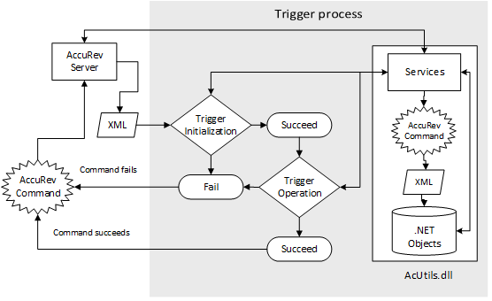
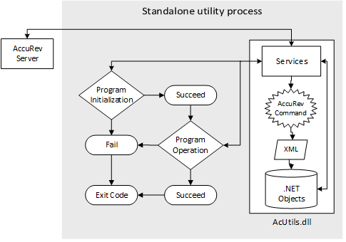

|
AcUtils
A high performance abstraction layer for AccuRev
|
|
AcUtils
A high performance abstraction layer for AccuRev
|
 
AcUtils is a high performance abstraction layer for AccuRev. It's an open source library written in C#, developed at Verizon and available on https://github.com/Verizon/AcUtils. AcUtils expands AccuRev's core product offering by way of XML and the .NET Framework. As a strongly named (tamper resistant) assembly (AcUtils.dll), AcUtils provides a secure high level API to AccuRev CLI commands by spawning their execution and converting the XML result into .NET objects. This allows the use of integrated development environments and programming languages with familiar constructs. AcUtils facilitates the development of ad hoc queries, custom applications, and pre/post operation triggers. It helps streamline administrative tasks and enables third-party integration.
Moreover, complex tasks can be simplified and in-depth analysis achieved using AcUtils and LINQ to XML, where LINQ query syntax can replace traditional loops (e.g., for, while, do/while, etc.), thus moving program logic from an imperative model to a declarative one, for code that is more expressive, powerful, and maintainable. AcUtils also provides phenomenal performance compared to traditional methods via async programming for background processing (responsive UIs) and concurrent code execution across multiple CPUs. Features include:
.ini files, a database, or hardcoded in the source code. 1.8.9.1
1.8.9.1